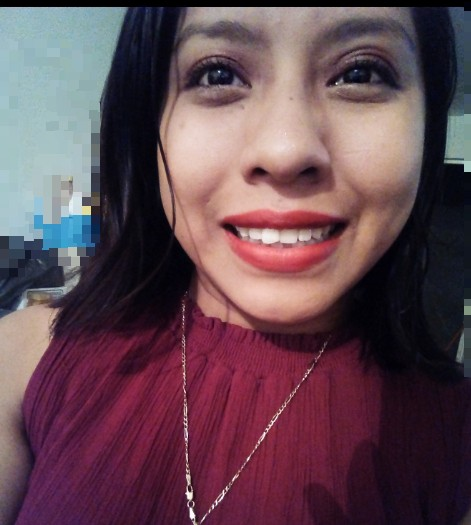

Curriculum
| Joselyn Bartolo Rubio |
 |
| 21 años |
| Ciudad Valles, San Luis Potosí, México |
| Tel : 481-110-0639 |
| Email : JoselynBartoloRu@gmail.com |
Pertenezco a la Carrera de Ingeniería en Sistemas Computacionales la cual me ha permitido adquirir los
Conocimientos necesarios para el emprendimiento de proyectos de Software, desde la programación y manejo de Bases de Datos hasta su Documentación y Gestión, incluyendo de igual forma el trabajo en equipo.
Estudios

| 2012-2015 |
|
|
|
|
Colegio de Bachilleres #34 |
| Ciudad Valles, S.L.P |
|
|
|
|
Culminado con Especialidad en Informática |
| 2015 |
|
|
|
|
Instituto Tecnológico de Ciudad valles |
| Ciudad Valles, S.L.P |
|
|
|
|
Actualmente cursando la carrera de Ingeniería
en Sistemas Computacionales |
Preios y Reconocimientos
Bachillerato:
- Presidenta del Consejo Estudiantil
- 2 veces ganadora en Certamen de proyectos de Informática del Cobach 34 con los proyectos
“ABAL PATAL”-Traductor Tenek y “Chik’s” Calendario Femenil
Superior:
-
Asistí a talleres tales como:
- Mantenimiento preventivo y correctivo de Laptops
- Larabel
- Programación Web
- Robotica